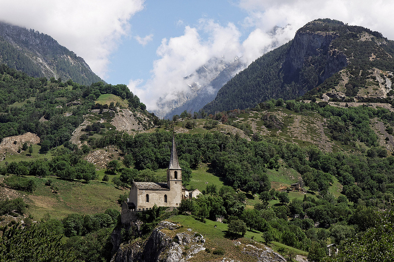

Być snem niczyim
O północy Rilke zapadł w śpiączkę; przy jego posłaniu czuwali Nanny Wunderly oraz lekarz; o godzinie pół do czwartej nad ranem, 29 grudnia, otworzywszy szeroko oczy uniósł głowę, po czym osunął się martwy w ramiona Haemmerliego…
Leżące ciało — szczupła, prawie brązowa twarz, ciężkie powieki zamknięte pod bujnymi brwiami — przywodziło na myśl postać jakiegoś duchownego, rodem z Persji lub Indii, mędrca, który na krótko przybył z daleka na ziemię, a teraz, wybawiony z udręki, leżał bez życia na swym łożu śmierci.
W końcu nie dbają o nas ci, którzy wcześnie odeszli,
od bytu ziemskiego odwyka się lekko, jak się od piersi
matki odłącza łagodnie. Ale my, którym trzeba
tak wielkich tajemnic, którym z żałoby tak często
wynika rozkwit błogi: czyżbyśmy mogli żyć bez nich?
W niedzielę, 2 stycznia roku 1927, w słoneczny, mroźny dzień, po krótkim nabożeństwie, w czasie którego z organów i skrzypiec Almy Moodie popłynęły dźwięki muzyki Bacha, Rilke spoczął w mogile przy murze kościółka w Raron, wzniesionego wysoko ponad doliną Rodanu.
„Pragnę, by mnie pochowano na wysoko położonym cmentarzu obok starego kościoła w Raron. Tam, w jego otoczeniu, po raz pierwszy odczułem wiatr i światło tego krajobrazu” — napisał Rilke na kartach swego testamentu.
Poeta pozostawił również szczegółowy opis swego nagrobka. Życzył sobie, by na kamiennej steli wyryto jedynie herb, nazwisko, a poniżej epitafium, które do dziś zachwyca i zastanawia swoją wieloznacznością:
Różo, och, czysta sprzeczności, rozkoszy,
być snem niczyim pod tak wielu
powiekami.
Epitafium oraz fragment Elegii duinejskich w przekładzie M. Jastruna; fragmenty testamentu oraz biografii Dźwięczące szkło D. Pratera w przekładzie autora.